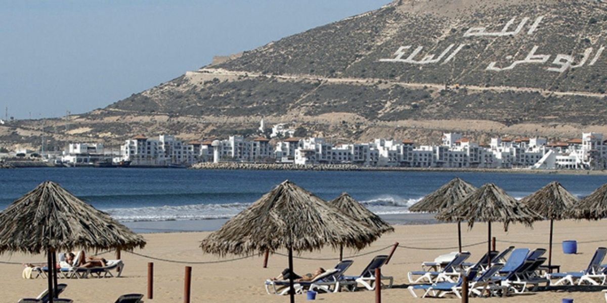
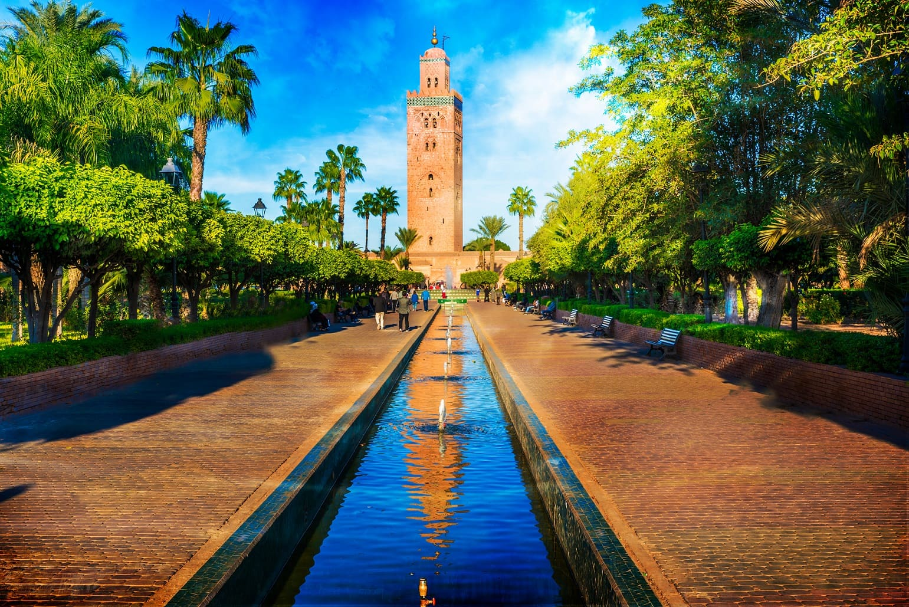
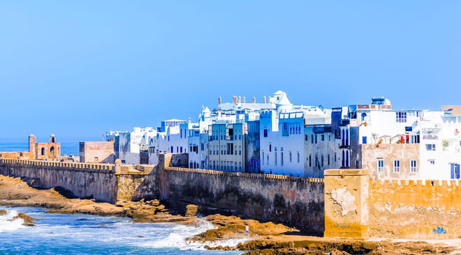
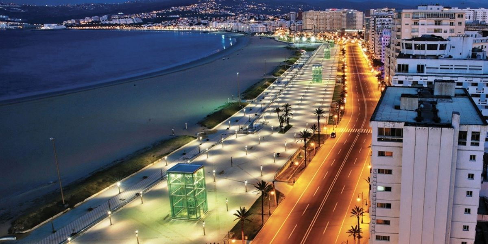

Agadir
Agadir, ville située sur la côte atlantique sud du Maroc dans les contreforts de l'Anti-Atlas, est la capitale de la province d'Agadir Ida-Outanane. Cette station balnéaire est réputée pour ses parcours de golf, sa large plage en croissant et sa promenade en front de mer bordée de cafés, de restaurants et de bars. Perchée sur une colline, la kasbah d'Agadir a été détruite lors d'un tremblement de terre en 1960
visiter moiMarrakech
Marrakech, ancienne cité impériale de l'ouest du Maroc, et un centre économique majeur abritant des mosquées, des palais et des jardins. La médina est une cité médiévale fortifiée et densément peuplée datant de l'Empire berbère, avec des allées entremêlées tel un labyrinthe, où les souks (marchés) animés vendent des étoffes, des poteries et des bijoux traditionnels. Symbole de la ville, le minaret de la mosquée maure de Koutoubia du XIIe siècle est visible à des kilomètres.
visiter moiEssaouira
Essaouira est une ville portuaire et touristique située sur la côte atlantique du Maroc. En bord de mer, sa médina (vieille ville) est protégée par des remparts du XVIIIe siècle, appelés la Skala de la Kasbah et imaginés par des ingénieurs européens. Parsemées d'anciens canons en cuivre, les fortifications offrent une vue sur l'océan. Avec leurs alizés puissants, les plages de la ville sont idéales pour surfer, faire de la planche à voile et du kitesurf.
visiter moiTanger
Port marocain situé dans le détroit de Gibraltar, Tanger constitue depuis l'époque des Phéniciens un point stratégique entre l 'Afrique et l'Europe. À flanc de coteau, sa médina aux bâtiments blanchis à la chaux comporte le Dar el makhzen, un ancien palais de sultans devenu aujourd'hui un musée d'objets anciens du Maroc. Occupant un ancien consulat de style maure datant de 1821, le musée de la légation américaine, dans la médina également, retrace l'histoire des premières relations diplomatiques entre les États-Unis et le Maroc.
visiter moi